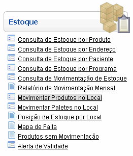
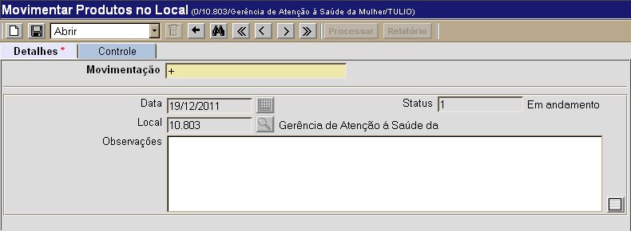
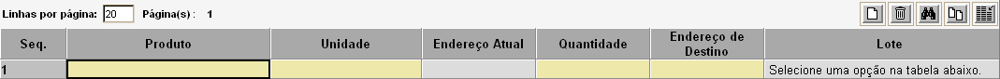
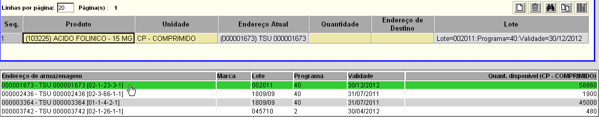
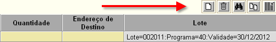
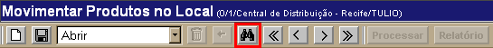
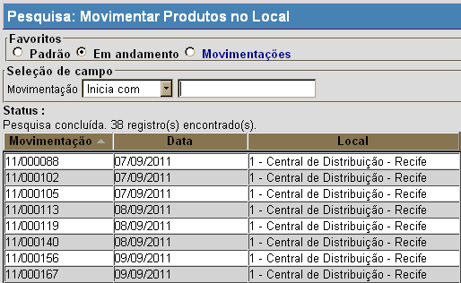

Movimentar Produtos no Local [ Voltar ] O formulário"Movimentar Produtos no Local" encontra-se dentro do menu "Estoque". 
Ao clicar no formulário, a seguinte tela será exibida: 
Selecione uma das duas opções abaixo para ver o guia passo-a-passo: Cadastrar movimentação de produto Localizar e abrir movimentação existente Cadastrar movimentação de produto1º Passo: clique no botão para salvar esta movimentação. Ao salvar o registro, uma grade será exibida para inclusão dos produtos e endereços da movimentação. Observação: se necessário, deposite informações adicionais sobre a movimentação no campo "Observações".

2º Passo: informe os dados de produtos, endereços e lotes para movimentação. Após selecionar o produto, na parte inferior do formulário, selecione com um clique o endereço de armazenagem/lote/validade desejado para o produto em questão. 
Observação: para adicionar, excluir e pesquisar produtos da movimentação, clique nos botões da grade (ver imagem abaixo). 
3º Passo: após inserir todos os dados da movimentação, clique no botão "Salvar" . 4°
Passo: clique no botão
para concluir a movimentação. Após o processamento, clique
no botão
Localizar e abrir movimentação existentePara visualizar os detalhes de uma movimentação
já cadastrada, siga os passos abaixo. 
Em seguida, utilize os filtros da pesquisa para localizar mais facilmente a movimentação que deseja localizar. Para mais informações sobre outros recursos e funcionalidades da pesquisa, favor ver o manual Introdução ao Sistema. 
Assim que localizar o registro de movimentação em questão, selecione-o com um clique. Quando o registro é selecionado, o seu cadastro é aberto e são exibidas as informações atuais. |
 para visualizar o relatório "Movimentação de Estoque Local". Em seguida, para
imprimir o relatório clique no botão
para visualizar o relatório "Movimentação de Estoque Local". Em seguida, para
imprimir o relatório clique no botão  [Imprimir]
do navegador.
[Imprimir]
do navegador.